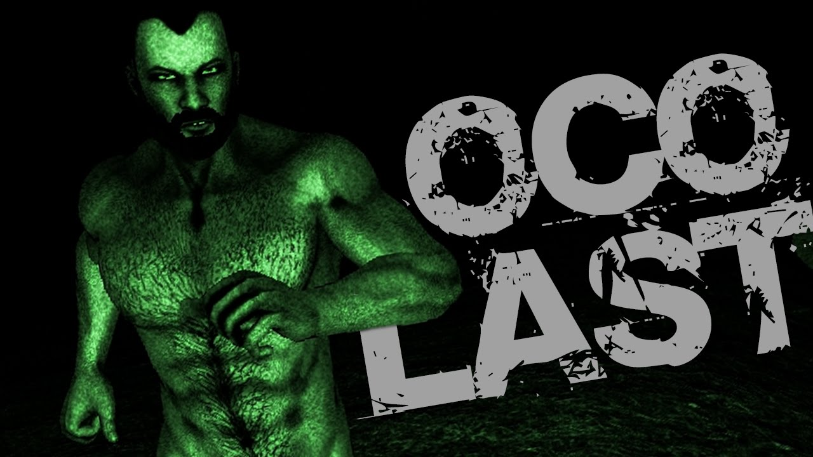

Resista a delicia se puder...

Para se vencer esse jogo, basta encontrar os oito papéis espalhados por um mapa bem assustador e encontrar as peças do Kaun Desu pra ele poder relaxar. Só que, apesar do jogo ser quase a mesma merda do Slender, obviamente ele não conta com o Slender original atrás de você, muito pelo contrário, a pica do Guine não é nada "slender" (se não sabe inglês [igual a mim] procure no Google Tradutor o significado de "slender"). De fato, não há o Slender Man, mas você já deve saber muito bem o que vai acontecer caso o Paulo Guina te pegue, o que é bem pior que morrer nas mãos magrinhas do Slender.